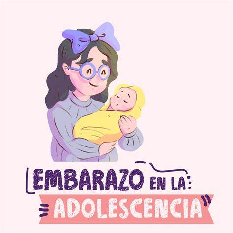

Embarazo Adolescente
Preguntas frecuentes
¿Qué es el embarazo adolescente?
El embarazo adolescente se refiere al embarazo que ocurre en mujeres de 19 años o menos. En otras palabras, es cuando una mujer queda embarazada después de su primera menstruación, una vez que inician sus ciclos menstruales regulares y tienen relaciones sexuales vaginales con un hombre. Este fenómeno tiene causas claramente conocidas y conlleva graves consecuencias sanitarias, sociales y económicas. En 2019, se calcula que las adolescentes de entre 15 y 19 años en países de ingreso mediano-bajo tuvieron 21 millones de embarazos al año, de los cuales aproximadamente el 50% eran no deseados. Se estima que en 2016 se produjeron 21 millones de embarazos en mujeres adolescentes de 15 a 19 años en las regiones en desarrollo, de los cuales se estima que 12 millones dieron lugar a nacimientos. Los datos sobre partos entre niñas de 10 a 14 años no están ampliamente disponibles, pero algunos datos indican que las tasas de natalidad en este grupo de edad superaron los 10 nacimientos por cada 1000 niñas en 2020. El 55% de los embarazos no deseados entre las adolescentes de 15 a 19 años terminan en abortos, que a menudo no son seguros en los países de ingreso mediano-bajo. Las madres adolescentes (de 10 a 19 años) tienen mayor riesgo de eclampsia, endometritis puerperal e infecciones sistémicas que las mujeres de 20 a 24 años. Los bebés de madres adolescentes tienen un mayor riesgo de padecer bajo peso al nacer, nacimiento prematuro y afección neonatal grave. El matrimonio infantil y el abuso sexual de niñas ponen a estas últimas en mayor riesgo de embarazo, a menudo no deseado. En muchos lugares, los obstáculos para obtener y usar anticonceptivos impiden que las adolescentes eviten embarazos no deseados. Se presta más atención a mejorar el acceso de las adolescentes embarazadas y con hijos a una atención materna de calidad. La prevención del embarazo entre las adolescentes y la reducción de la mortalidad y morbilidad relacionadas con el embarazo son fundamentales para lograr resultados positivos en la salud a lo largo de la vida y para alcanzar los Objetivos de Desarrollo Sostenible (ODS) relacionados con la salud materna y neonatal.

¿Cuáles son los riesgos del embarazo en la adolescencia?
Nacimiento prematuro del bebé: Las madres adolescentes (de 10 a 19 años) tienen un mayor riesgo de dar a luz antes de término, lo que puede afectar la salud y el desarrollo del bebé .
Bajo peso del recién nacido: Los bebés nacidos de madres adolescentes suelen tener un peso más bajo al nacer, lo que puede aumentar las complicaciones y la necesidad de atención médica especializada .
Mayor porcentaje de abortos espontáneos: Las adolescentes embarazadas tienen un riesgo más alto de abortos espontáneos, lo que puede ser emocionalmente y físicamente difícil para ellas .
Hipertensión arterial durante la gestación: Las madres adolescentes pueden experimentar presión arterial alta durante el embarazo, lo que puede afectar su salud y la del bebé .
Rotura prematura de aguas: La rotura temprana de las membranas amnióticas puede ocurrir en el embarazo adolescente, lo que puede aumentar el riesgo de infecciones y complicaciones .
Placenta previa: Las adolescentes embarazadas tienen un mayor riesgo de placenta previa, una condición en la que la placenta cubre parcial o completamente el cuello uterino, lo que puede causar hemorragias y complicaciones .
Anemia grave: La anemia es más común en las madres adolescentes debido a la falta de una buena nutrición y cuidado prenatal .
Crecimiento intrauterino retardado: Los bebés de madres adolescentes pueden experimentar un crecimiento más lento dentro del útero, lo que puede afectar su desarrollo
¿Cómo prevenir el embarazo no deseado?
La única manera infalible al 100% de no quedar embarazada es no tener sexo vaginal (pene-en-vagina) o realizar cualquier actividad sexual donde el esperma entre en contacto con la vulva o en la vagina (esto se llama abstinencia). Sin embargo, si vas a tener sexo vaginal, entonces la mejor manera de prevenir un embarazo es usar un método efectivo de anticoncepción (como un DIU o implante) + un condón. Algunos anticonceptivos dan mejores resultados que otros. Los más eficaces para la prevención de un embarazo son los implantes y DIUs, ya que son los más convenientes y más infalibles de usar. Otros métodos, como la pastilla, anillo, parche e inyección, también son muy buenos para la prevención de un embarazo si se usan correctamente. Pero recuerda que las personas no son perfectas y estos métodos tienen más posibilidades de fallar que los implantes y DIUs. Es realmente importante asegurar el uso correcto de los anticonceptivos. Esto significa que no puedes olvidar tomar la pastilla, cambiar el anillo o darte la inyección a tiempo, ya que esto te pondría en riesgo de embarazo. Así que el mejor método es aquel que siempre uses correctamente. Además, puedes elevar tu protección a nivel super poder al usar un anticonceptivo más un condón juntos. Condones + Anticonceptivos = Protección Extra. Los condones son como el superhéroe de un sexo más seguro: son la única manera de protegerte de un embarazo y de las ETS durante el sexo vaginal. También reducen drásticamente las posibilidades de contraer enfermedades de transmisión sexual, como el VIH, la gonorrea, clamidia y herpes. Otra gran ventaja de los condones es que los puedes conseguir casi en cualquier lugar, como autoservicios, tiendas, supermercados y estaciones de servicio. No cuestan mucho dinero y, a veces, incluso son gratuitos en las clínicas comunitarias, centros de salud escolares o centros de salud de Planned Parenthood.